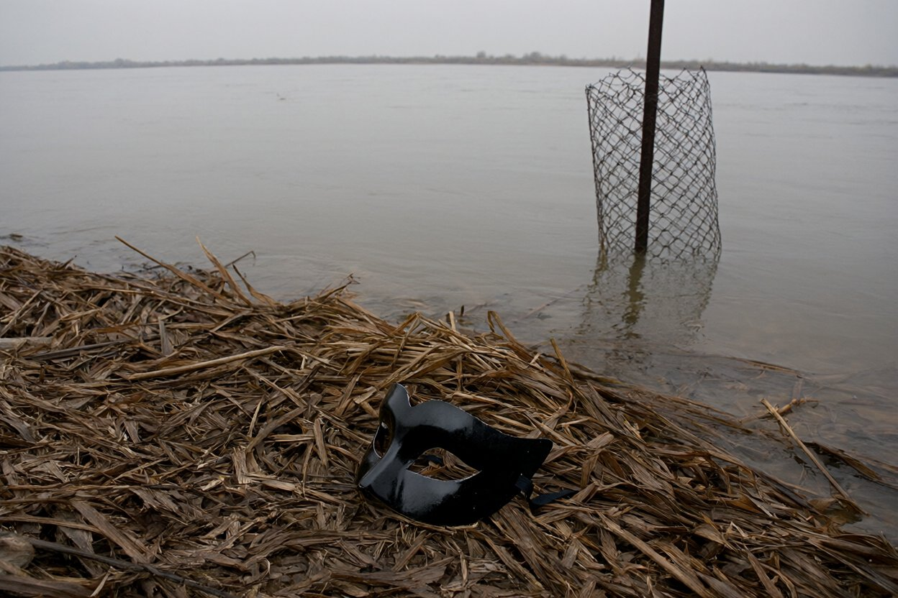
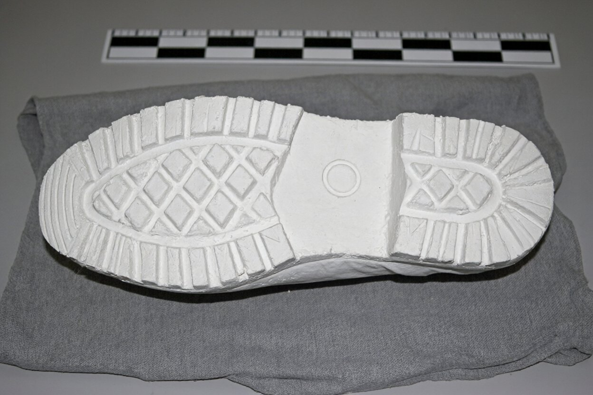

| Місце | б/в «Тиха заводь»: задні двері лазні, кладка, південно-східний кут паркану, берег Сіверського Дінця (за парканом) |
| Огляд | чт 1.11.2007, з 13:50 до 16:00; сухо, хмарно, +5 |
| Провів | Шульга В.І., з ним Марченко Д. (фото, виміри). Людмила Кравець показала, звідки зручніше підійти, далі не йшла |
Задні двері лазні. На гачку зсередини; ззовні кладка з дощок (мокра дошка слідів не тримає). Від кладки до котеджів — викошений газон і бетонна доріжка: слідів нема й бути не може. Людмила про гачок: «Його на ніч закидають, а хто у неділю зранку — не пам'ятаю».
Кінець паркану. Огорожа з бетонних стовпів і рабиці йде до води й закінчується стовпом у воді. Обійти можна по коліно, ≈ 6 м (я пройшов у гумових чоботях; Ден тримав мотузку). З внутрішнього боку стовпа — пісок і газон, слідів нема.
Сліди. З зовнішнього боку, у мулі по обидва боки стовпа, і на глиняній ділянці рибальської стежки (≈ 100 м від стовпа) — чіткі сліди черевиків, розмір ≈ 44, протектор «ромби + кружок біля каблука». Дві доріжки: до стовпа і від нього, тобто туди й назад; у мулі вони стоять поруч, одна глибша. Далі стежка берегом до села, сліди губляться. Зроблено фото з лінійкою (фото 2), гіпсовий зліпок кращого відбитка.
Очерет. За парканом, ≈ 5 м від стовпа, в сухому очереті — чорна венеціанська маска з пап'є-маше (фото 1), зворотний бік дряпаний, на ньому наліпка магазину. Лежить лицем донизу, мокра від туману, не від води. У руки без рукавичок не брали, в пакет поклали пінцетом.


Адреси магазину на наліпці нема. Маска й зліпок — у теці справи, до міліції не передавали.